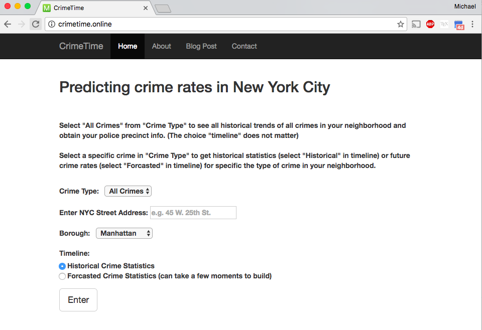
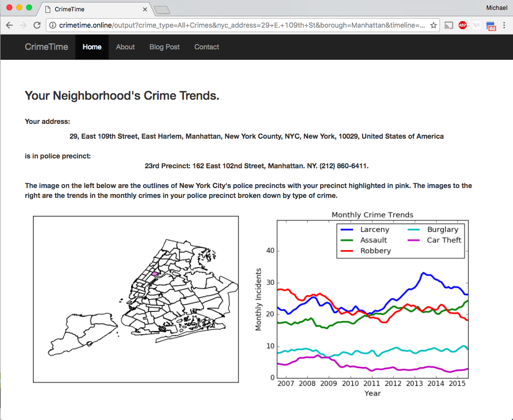
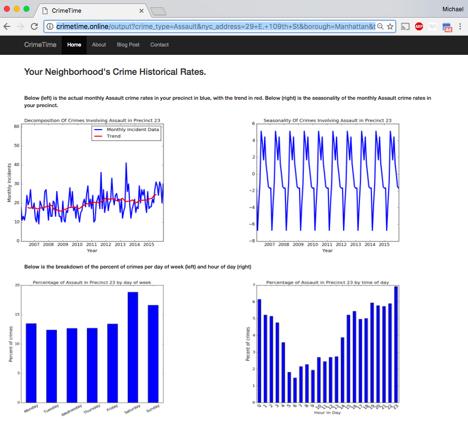

Welcome to CrimeTime’s documentation page!¶
To see the web application in action visit: www.crimetime.online
Introduction¶
This web application was part of a 3 week project at Insight Data Science. It built was written in Python and Flask and was deployed to Amazon web services. Users are prompted to enter an address from the input page seen below.
{kind=link}
And they get back a report on the historical trends of crimes in their neighborhood
{kind=link}
Users can look at the historical data of specific crimes in their neighborhood and get more specific on trends, seasonality, as well as which days and time most crimes happen like the results below:
{kind=link}
Users can also choose to forecast specific crime rates in their neighborhood into the future.
Documentation¶
Once the address is supplied by the user I use the GeoPy library to get the latitude and longitude of the address. Once that latitude and longitude are known I use the shapely library to find out which police precinct the address is in and obtain the data on that police precinct. The info for police precincts was obtained by scraping the NYPD’s website using beautifulsoup library and also this specific database on the NYC Open Data Website. The crime data was obtained from the NYC Open Data Website and cleaning was completed using Pandas and GeoPandas. The data was then stored in a SQLite. Forecasted crime rates were predicted using a seasonal ARIMA model through the python library StatsModels. I used a grid search to obtain the appropriate model paramaters that minimize the validation error.
For specific information on the classes and methods, see the below,
Dependencies¶
- Python 2.7
- SQLite
- StatsModels (0.8.0rc1)
- Pandas (0.19.1)
- GeoPandas (0.2.1)
- Geopy (1.11.0)
- Shapely (1.5.17)
- Flask (0.11.1)
- Basemap (1.0.7)
- Matplotlib (1.5.3)
- Numpy (1.11.2)
- Beautifulsoup4 (4.5.3)
- Sphinx (only to build documentation)
- pytest (only for testing)
Installation¶
Download the file “NYPD_7_Major_Felony_Incident_Map.csv” from the NYC Open Data website, place it in the /CrimeTime/data/ directory. Then in the /CrimeTime/ directory run
python ./backend/PreProcessor.py
to build the database.
NOTE: If NYC Open Data no longer has the file on their website, please email me and I will provide you with the database.
Usage¶
Run the command in the /CrimeTime/ directory:
python run.py
then you should see something like:
Running on http://0.0.0.0:5000/ (Press CTRL+C to quit)
Go to the address, “http://0.0.0.0:5000/” in your web browser to use the web application.